N-D Test Functions W¶
N-D Test Functions W¶Watson test objective function.
This class defines the Watson global optimization problem. This is a unimodal minimization problem defined as follows:
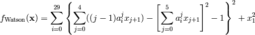
Where, in this exercise, 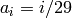.
Here,  represents the number of dimensions and
represents the number of dimensions and ![x_i \in [-5, 5]](_images/math/b7a53fa3c9c2f313c2a86c222fdfbbeaf4b5a3ed.png) for
for  .
.
Global optimum: 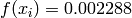 for 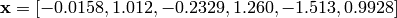
W / Wavy test objective function.
This class defines the W / Wavy global optimization problem. This is a multimodal minimization problem defined as follows:
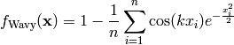
Where, in this exercise,  . The number of local minima is
. The number of local minima is  and 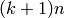 for odd and even
and 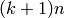 for odd and even  respectively.
respectively.
Here, represents the number of dimensions and 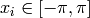 for  .
.
Two-dimensional W / Wavy function
Global optimum:  for
for  for
for
Wayburn and Seader 1 test objective function.
This class defines the Wayburn and Seader 1 global optimization problem. This is a unimodal minimization problem defined as follows:
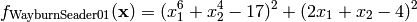
Here, represents the number of dimensions and for .
Two-dimensional Wayburn and Seader 1 function
Global optimum: for 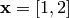
Wayburn and Seader 2 test objective function.
This class defines the Wayburn and Seader 2 global optimization problem. This is a unimodal minimization problem defined as follows:
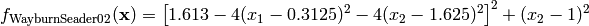
Here, represents the number of dimensions and ![x_i \in [-500, 500]](_images/math/286a33626f115cb9d7e75a098b287cf93b7916e5.png) for .
for .
Two-dimensional Wayburn and Seader 2 function
Global optimum: for 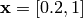
Weierstrass test objective function.
This class defines the Weierstrass global optimization problem. This is a multimodal minimization problem defined as follows:
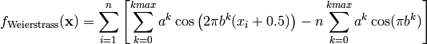
Where, in this exercise,  , 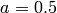 and 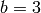.
, 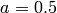 and 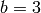.
Here, represents the number of dimensions and 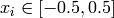 for  .
.

Two-dimensional Weierstrass function
Global optimum: 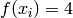 for for
Whitley test objective function.
This class defines the Whitley global optimization problem. This is a multimodal minimization problem defined as follows:
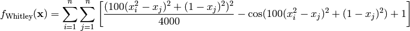
Here, represents the number of dimensions and 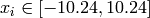 for .
Two-dimensional Whitley function
Global optimum: for  for
for
Wolfe test objective function.
This class defines the Wolfe global optimization problem. This is a multimodal minimization problem defined as follows:
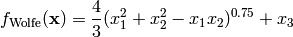
Here, represents the number of dimensions and 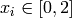 for  .
.
Global optimum: for for